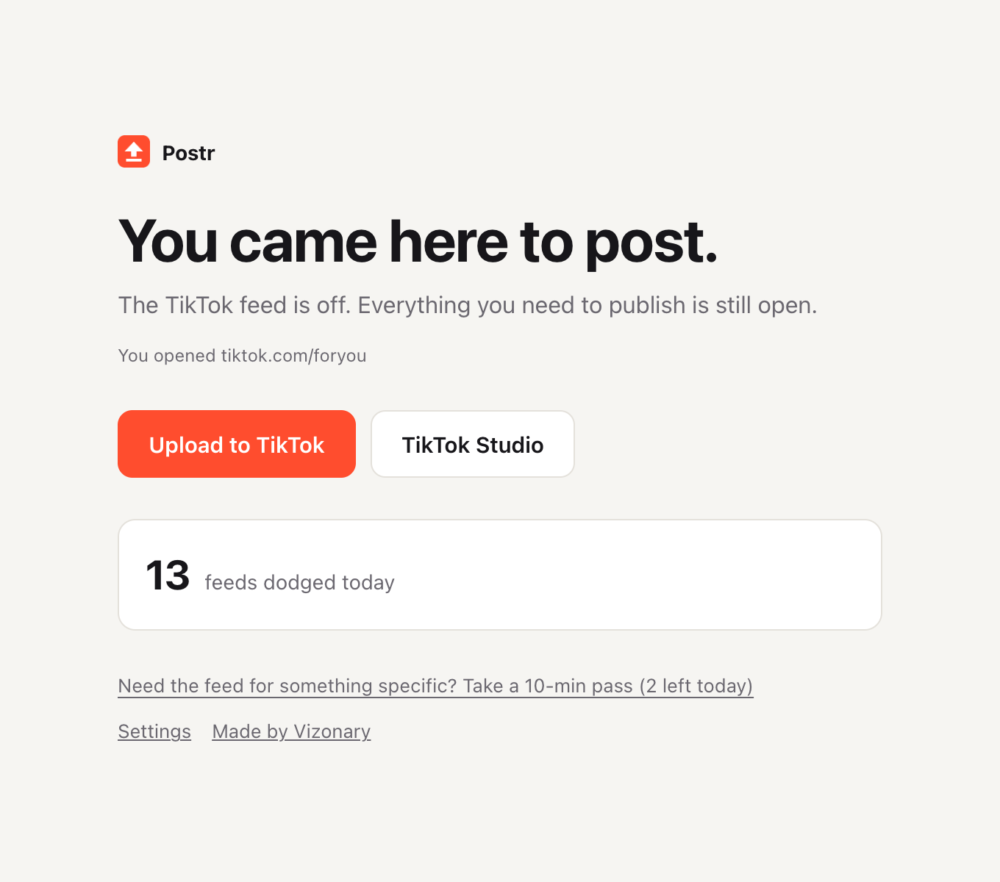
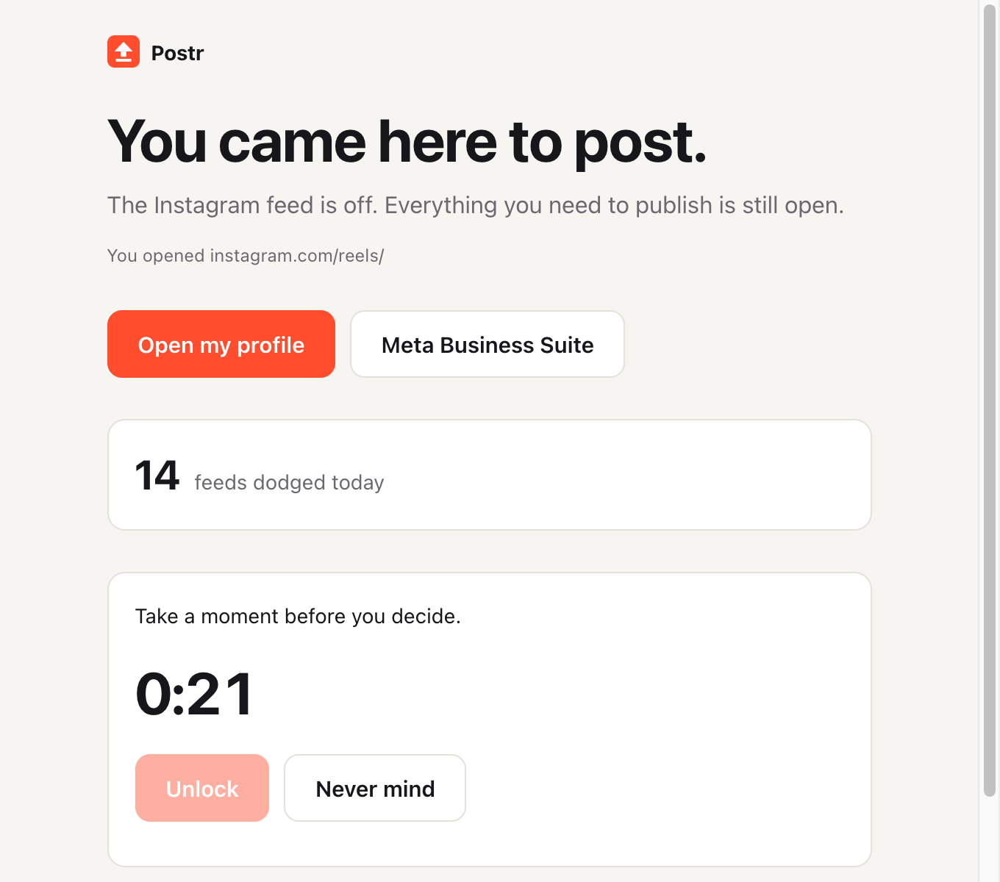

Postr
Postr
Post.
Don't scroll.
YouTube, TikTok and Instagram feeds stay shut. Upload, studio and your own profile stay one click away.
Works in Chrome, Brave, Arc and Edge. Free for YouTube.

Postr
YouTube, TikTok and Instagram feeds stay shut. Upload, studio and your own profile stay one click away.
Works in Chrome, Brave, Arc and Edge. Free for YouTube.

How it works
You open YouTube to upload. Forty minutes later you've watched twelve Shorts and posted nothing. Postr takes the feed out of the way.
Home, Shorts, Reels, For You and Explore show a calm block page instead of the scroll.
Studio, upload, your own profile and account settings all work exactly as usual.
The toolbar button jumps straight to each platform's upload page, skipping the feed.
What's open, what's shut
| Platform | Stays open | Stays shut |
|---|---|---|
| YouTube | Studio, upload, your own channel and Posts tab | Home, recommended videos, Shorts, search, subscriptions, other channels |
| TikTok | TikTok Studio, upload, your own profile and videos | For You, Explore, Following, Live, search, other profiles |
| Your profile and the Create button, your stories, settings | Home feed, Explore, Reels, other profiles |
Passes
Sometimes you do need to check a trend. A pass makes you wait 30 seconds and type a short sentence, then opens the feed for 10 minutes and closes it again. Two a day. Or turn on strict mode and skip passes entirely.

Pricing
No account and no subscription. Postr runs entirely in your browser, so it never costs us anything to keep it running for you.
Install Postr, then choose Get Pro in its settings.
FAQ
It checks the address of pages on YouTube, TikTok and Instagram to decide whether to block them. That check happens inside your browser and nothing is sent anywhere. No analytics, no ads. See the privacy policy.
Studio covers your videos, analytics and comments on YouTube and TikTok. On Instagram you can open your own posts from your profile grid. Anything that leads to someone else's content stays shut.
Take a pass from the block page. You wait, type a sentence, and get 10 minutes, after which the feed closes itself. Pro lets you change those numbers or switch passes off.
Not yet. Postr works in Chromium browsers on desktop: Chrome, Brave, Arc and Edge. A Safari version is planned.
Yes, from your browser's extensions page. Postr is a speed bump, not a cage. For most people that pause is enough to remember why they opened the site.
Pro is sold by Polar, our merchant of record, who handles payment, receipts and tax. If Pro isn't for you, ask for a refund within 14 days and you'll get one.
No. Postr is an independent tool and isn't affiliated with or endorsed by Google, ByteDance or Meta.